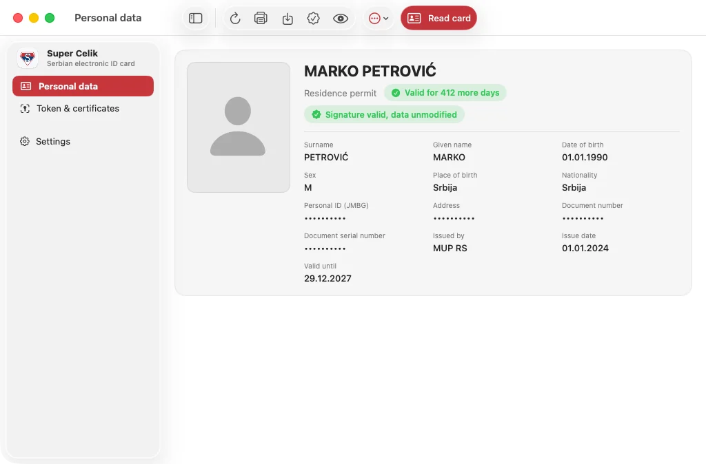
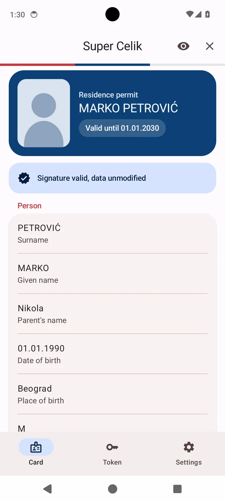
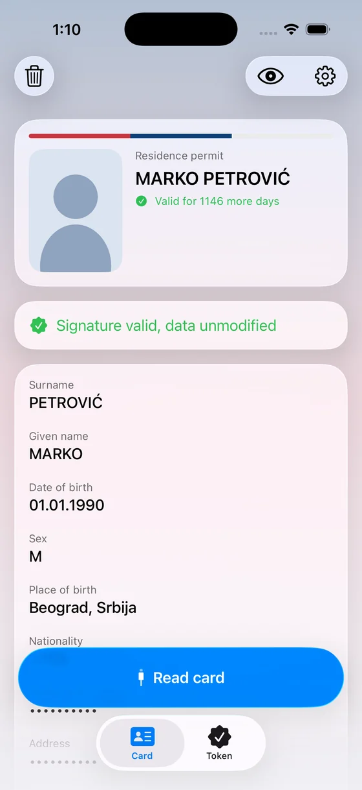
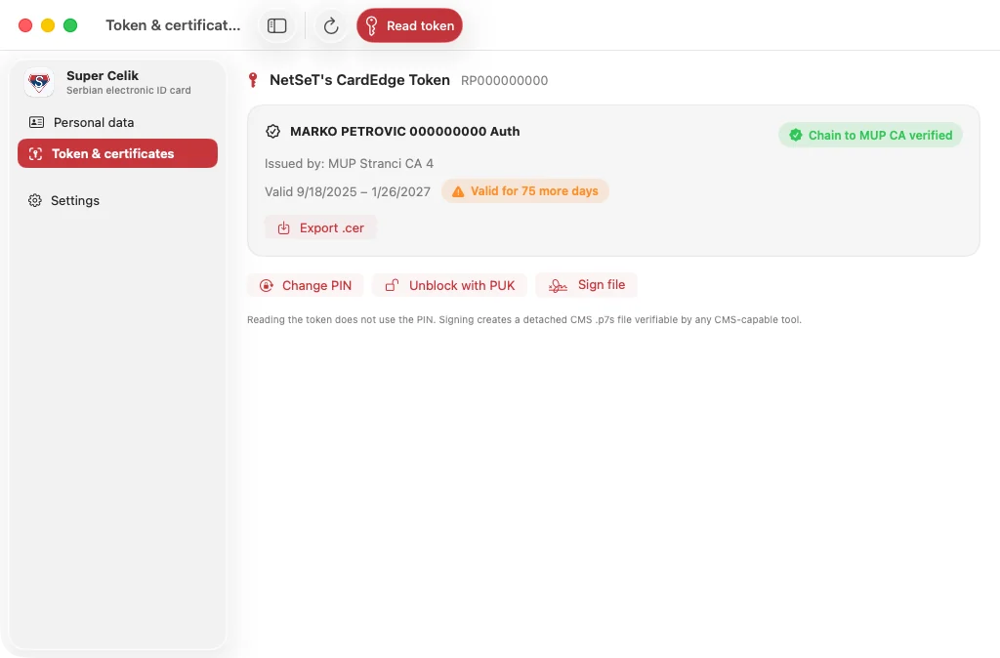
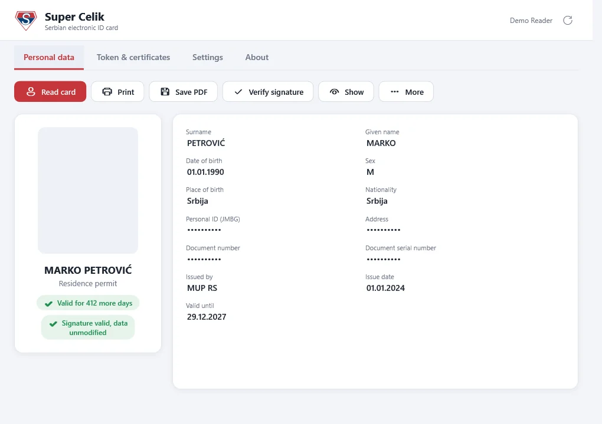
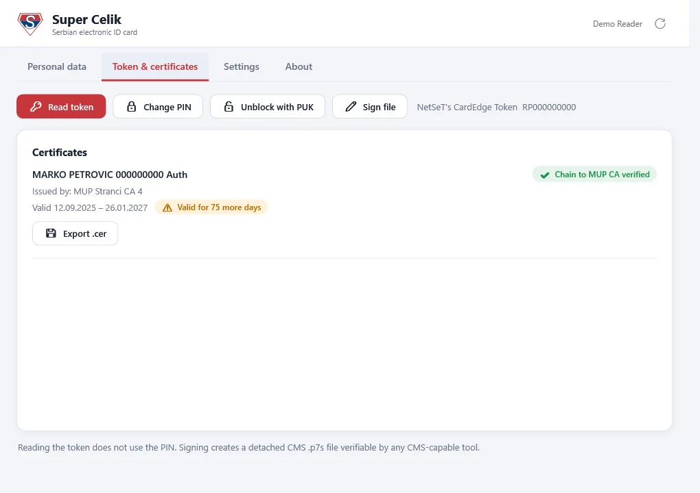
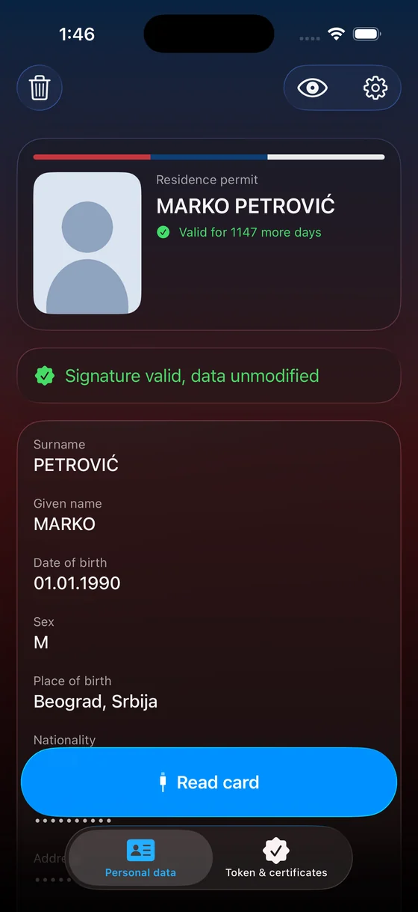
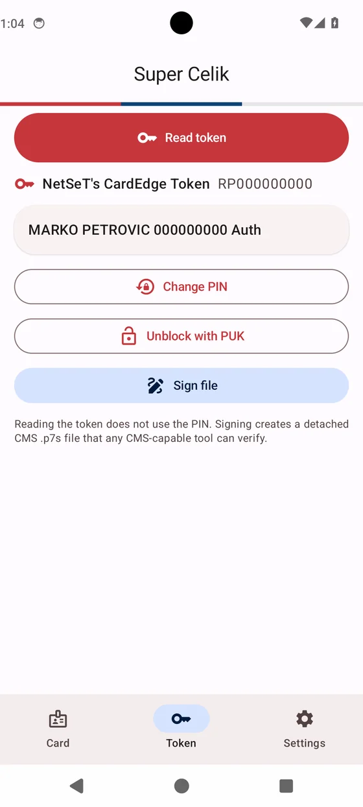

Личные данные и фото
Имя, личный номер, адрес, документ и фото. Чувствительные поля скрыты, пока вы их не покажете.
Super Celik читает карту, делает PDF и умеет ещё много чего — без установки драйверов, на всех удобных устройствах.



Super Celik заменяет Čelik и TrustEdge ID: читает карту, проверяет подпись МУП, печатает, подписывает файлы и помогает войти на eid.gov.rs.
Имя, личный номер, адрес, документ и фото. Чувствительные поля скрыты, пока вы их не покажете.
Подпись карты проверяется по цепочке сертификатов МУП. Видно, что данные не подделаны.
На Mac приложение ставит драйвер карты, и Chrome / Safari видят сертификат для входа на государственные порталы.
Печатная форма в стиле официальной: сохраните в PDF или отправьте на принтер.
Смена PIN, разблокировка по PUK, электронная подпись документов (.p7s) ключом карты.
Нет аккаунта, аналитики и серверов. Данные карты не покидают устройство и стираются автоматически.
Одинаковые возможности на macOS, Windows, Android и iPhone.

Данные карты, токен и сертификаты


Данные карты, токен и сертификаты

Светлая и тёмная тема. Чтение по NFC

Карточка, токен, смена PIN и подпись файлов
На скриншотах демо-режим с вымышленными данными.
Приложение независимое и пока без платной подписи разработчика, поэтому система при первом запуске может спросить подтверждение. Это нормально.
xattr -dr com.apple.quarantine /Applications/SuperCelik.app
Никуда. У приложения нет аккаунтов, аналитики и серверов. Карта читается локально, данные хранятся только в памяти и стираются при закрытии или по таймеру. Код открыт, его можно проверить.
Приложение пока не подписано платным сертификатом разработчика (Apple / Microsoft), поэтому система просит подтвердить запуск. Порядок действий — в разделе «Установка».
На компьютере — любой USB-ридер смарт-карт (PC/SC). На Android и iPhone можно читать по NFC, если в карте есть бесконтактный чип.
Электронная ID-карта, карта иностранца и вид на жительство нового образца (RP2024). Старая карта Apollo пока не поддерживается.
Нет. Это независимая реализация, не связанная с МУП РС и NetSeT/Veridos.